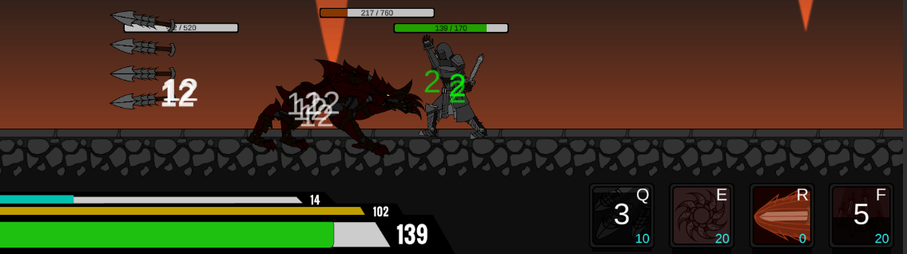
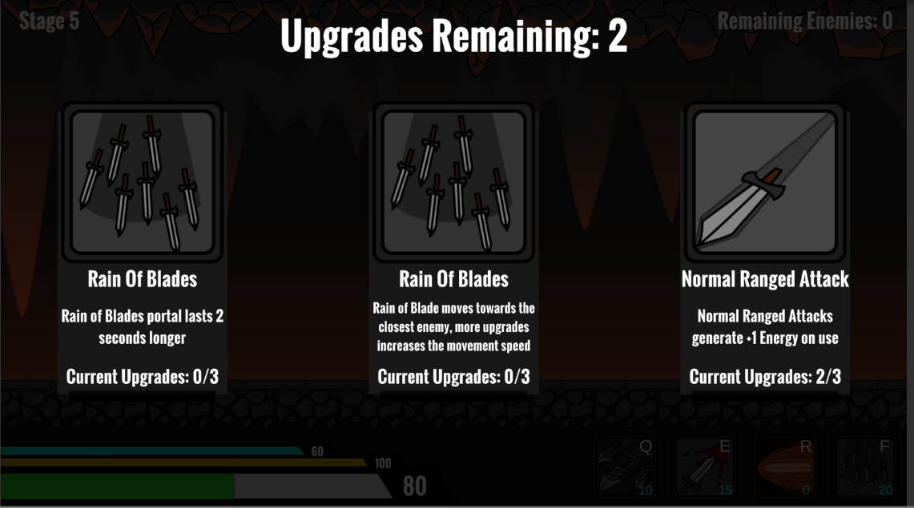
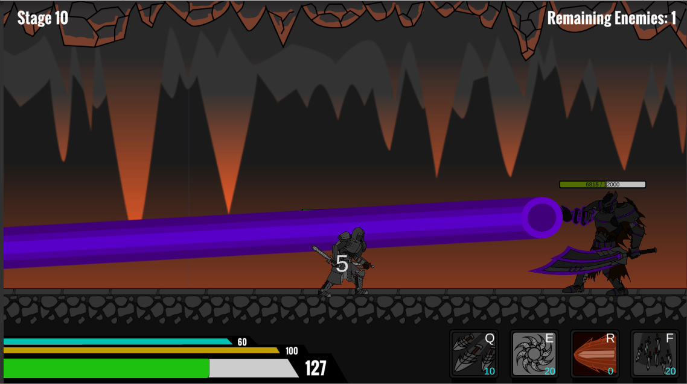

Slayer Scroller
A 2D wave based sidescroller that I am creating to demonstrate my current knowledge of the Unity game engine.
The player fights through stages of enemies, gaining new skills and upgrading existing ones as they progress.
The current version features: 9 upgradable skills, 3 different normal enemy types, 1 elite enemy type, and 1 boss.
Above is an example of an upgrade screen. Players can choose 1 out of 3 upgrades of skills they are currently equipping.
Above is a skill used by the first (and currently only) boss of the game. This boss has 6 different skills, some of which behaves differently depending on the phase of the fight.
You can try out the game Here by downloading and unzipping the file, then Run the .exe
If you are interested in the scripts/unity files for the game, it can be found Here